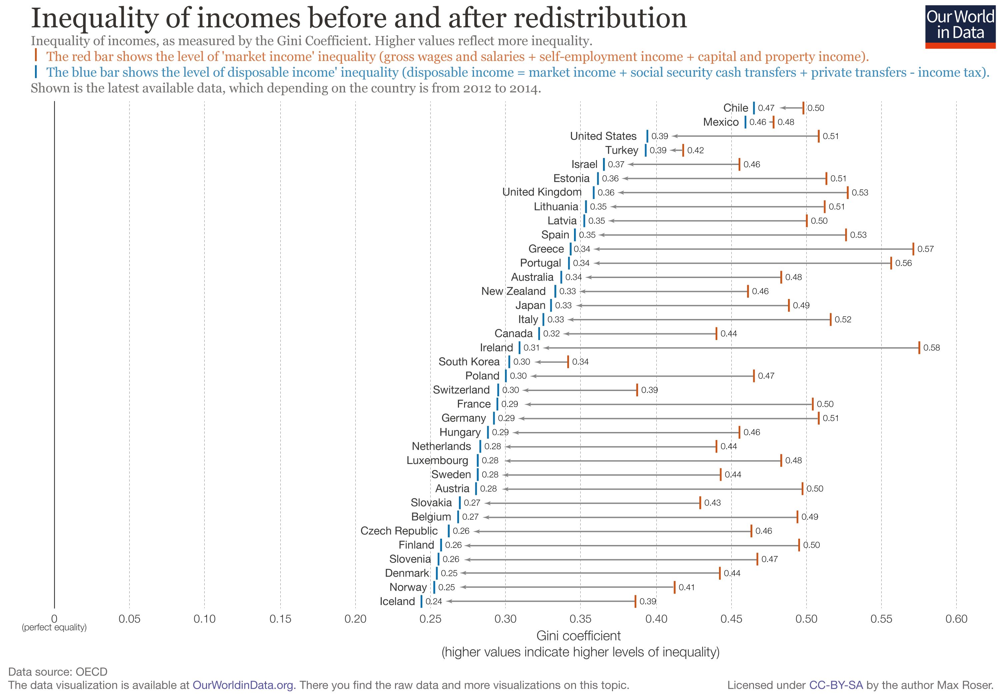

Basic income can make switching to a flat income tax progressive
The current US income tax code taxes different types of incomes at different rates, includes an array of credits and deductions that primarily benefit the upper and middle class, and requires Americans to spend billions of hours and dollars filing taxes each year. A 2015 Pew survey found that 66 percent of Republicans and 48 percent of Democrats support completely changing the tax system. While there are many ways to reform the tax code, a simple way is taxing every dollar at the same rate; this is often called a “flat tax.” In this paper, we examine the impact of replacing today’s system with a budget-neutral combination of flat income taxes and universal basic incomes (UBIs).
US flat tax simulations
We simulated the effect of replacing the current federal income tax code and employee side payroll tax with a flat tax over a range of rates. We allocated any excess revenue to a UBI to make each reform budget-neutral, and filled budget shortfalls with a head tax (equal tax amount per person, essentially a negative UBI). 1
A flat tax of approximately 18 percent would raise the same amount of revenue as federal income taxes and employee side payroll do today. Each percentage point of flat tax raises enough revenue to fund a UBI of $360 per year for each adult and child.
This replacement would increase the poverty rate by 37 percent, increase the poverty gap (the dollar amount needed to lift everyone above the poverty line) by 23 percent, and increase inequality (as measured by the Gini index of resources per person) by 7 percent.
Maintaining current levels of poverty and inequality requires a higher tax rate to raise funds for a UBI. A 21 percent flat tax, which would give each person $1,200 per year, would maintain the current poverty gap; a rate and poverty gap; a 22 percent tax giving each person about $1,600 per year would maintain the current poverty rate; a 23 percent tax giving each person about $1,900 would maintain current inequality.
Higher taxes funding more generous UBIs reduce poverty and inequality to a greater degree. A flat tax of 30 percent would fund a UBI (including children) of nearly $4,500—cutting poverty in half and inequality by 9 percent. Going up to 50 percent funds a $1,000 monthly UBI, leaving the poverty rate at a tenth of its currently level and cutting inequality by a third.
The chart below shows how different flat tax rates up to 50 percent would impact poverty and inequality (the hover function shows the corresponding head tax or UBI for each reform).
From the point of the flat tax producing a UBI (18 percent), higher rates lead to more Americans benefiting on a net basis. Replacing today’s taxes on individual income with a 28 percent flat tax would give each person about $3,700 per year, benefiting the majority of Americans. The share that come out ahead levels off around 60 percent, with flat taxes of 40 percent or more.
Generous transfers are the key to inequality reduction
Labor markets don’t explain the unusually high level of inequality in the United States, third only to Chile and Mexico among developed countries. For example, the US has similar “market income” inequality as France, Germany, and Finland—each with Gini indexes of 0.50 to 0.51, as shown in the right bars of this graph from Our World In Data.

What’s unusual about the US is how little its government reduces inequality through redistribution. While France, Germany, and Finland reduce inequality by 0.21, 0.22, and 0.24 on the Gini scale, the US only reduces it by 0.12.
What mechanisms do these other countries utilize to cut inequality twice as much as the US? Counterintuitively, it’s not progressive taxation—the US actually has the most progressive tax code in the OECD,2 and tax progressivity does not correlate significantly to inequality reduction (if anything the relationship is slightly negative).3
A stronger correlate of inequality reduction is the generosity of public cash transfers. The countries that distribute a higher share of household income as cash transfers generally cut inequality more.
While overall tax levels also significantly correlate with inequality reduction, the effect vanishes when controlling for cash transfers, as shown in column 4 of the regression table below. Cash transfers are consistently the dominant predictor of the extent to which governments reduce inequality.
This cross-country picture aligns with our simulations: larger UBIs cut inequality more, and even if the tax system that funds those larger UBIs isn’t progressive, ability to fund the UBI is what matters.
Conclusion
Beyond their simplicity, flat taxes have a number of theoretical advantages. Progressive tax structures necessarily encourage shifting income from one year to the next as well as marriage, divorce, or both.4 Flat taxes treat income neutrally, regardless of when it was earned, by whom, or earners’ family choices. And because they align marginal tax rates (which determine labor incentives) with effective tax rates (which determine revenue), they raise revenue with relatively little work disincentive. For example, a 2020 paper from the National Bureau of Economic Research found that “a uniform flat tax on capital and labor income combined with a lump-sum transfer is nearly optimal.”
Our simulations and cross-country comparisons show that these advantages don’t need to come at the cost of progressivity; if anything, they may enhance progressivity. Even a 30 percent flat income tax, with excess revenue distributed as UBI, could cut poverty in half, reduce inequality by 10 percent, and leave most Americans better off. To achieve the egalitarianism of other developed countries, the US should focus less on progressive taxation, and more on how to raise enough revenue to distribute it broadly, effectively, and generously.
-
We replaced all elements of the personal income tax code, including refundable tax credits, but we retained benefit programs. The analysis is fully static; we did not model changes to labor supply resulting from the changes to marginal tax rates and incomes. We used the Current Population Survey (CPS) March Supplement reflecting income from 2019. The Census Bureau estimates tax liabilities using a microsimulation model, but income and taxes are known to be under-reported in the CPS. ↩
-
As of 2005, the US had the most progressive tax code of any OECD country according to the concentration index (as shown in the graph), as well as two alternative measures: the ratio of concentration coefficients of household taxes to the Gini index of market income, and the ratio of the richest decile’s tax share to its market income share (Table 4.5 of Growing Unequal?). ↩
-
Data on inequality reduction comes from Our World In Data’s analysis of OECD data reflecting the period 2012 to 2014. Data on the concentration index and income shares of household taxes and cash transfers come from Table 4.6 of the OECD’s 2008 report, Growing Unequal?, which uses data from around 2005. Country population is as of 2014 from the World Bank. Taxes include income taxes and employee social security contributions, not consumption taxes; however, per Figure 11.2 in Growing Unequal?, consumption taxes have a small effect on relative levels of inequality across OECD countries. ↩
-
Consider, for example, two couples: one with $30,000 earnings each, and another with one earning $60,000 and the spouse earning $0. And consider a progressive tax policy with two rates: 0% (a standard deduction) and 50%. If the standard deduction is $30,000, the first couple has a total tax liability of $15,000 if filing as a couple, but $0 if filing separately—a large marriage bonus (the second couple’s tax liability is $15,000 whether married or separate). If the standard deduction instead varies with marital status, e.g. $15,000 for singles and $30,000 for couples, then the first couple will be treated neutrally, paying $15,000 whether filing separate or married. But now the second couple faces a marriage bonus, paying $22,500 in taxes if filing separately, but only $15,000 if married. This can be partly remedied by moving to an individualized tax system, as the United Kingdom does, where earnings are taxed independently of a spouse’s earnings. But couples will still have joint assets, and therefore face marriage penalties or bonuses on their capital income if capital income is taxed progressively. Only a flat tax avoids marriage penalties or bonuses. ↩
Subscribe to the UBI Center
Get the latest posts delivered right to your inbox